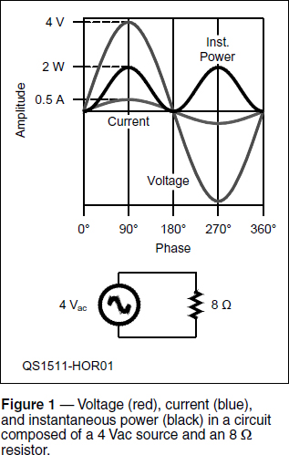
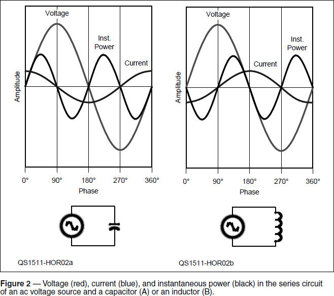
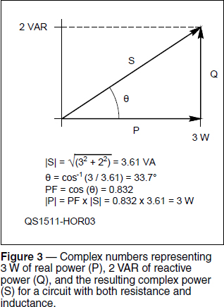

Experiment #154 — Power Factor and Phase Angle
Someone just learning electronics first learns Ohm’s Law relating voltage, current, and resistance: R = E / I. The next step is usually to learn how to calculate power: P = E × I, but this equation must be qualified by the term, “in a resistive circuit.” Inductive and capacitive circuits are somehow different, we learn. Why would inductance and capacitance have anything to do with power?
A similar conversation takes place when the terms “reactance” and “impedance” are introduced. Understanding resistance is fairly intuitive — it’s like electrical friction — but this reactance stuff can seem a little odd at first: “Okay, capacitive reactance is like a spring and inductive reactance is like a flywheel. I think I get that. But energy is energy, isn’t it? Why does this affect power, which is E × I? What is power factor? Phase angle?”
Understanding why inductance and capacitance and their abilities to store energy affect the relationship between power and energy can feel like deep water. In this column, we’ll explore these electrical fundamentals.
Power at Work
Before jumping in, let’s start from solid ground — power and energy in a resistor. When voltage is applied to a resistor, electrons begin to move (i.e. current) through whatever material the resistor is made of; carbon or metal film, nickel-chromium (nichrome) wire, a chunk of metal oxide, etc. The actual speed of the electrons is surprisingly low1 but there are an incredible number of them, even in the thinnest conductor. Each electron collides with the atoms making up the conductor and transfers some of its energy to the atom, causing it to vibrate, which is heat. Because the electron moves through the material in response to the applied voltage, the source of the electromotive force is said to have done work in the physics sense.2 In this case, the work is heating up the material.
Work (W) is measured in the same units as energy (joules) and can be thought of as “expended energy.” The rate at which work is performed per unit of time (t) is power: P = W / t and is measured in watts if t is measured in seconds. One watt (also abbreviated W) is equal to one joule of work done (or energy expended) per second. Higher power means more work has been done in a specific period of time or that a specific amount of work done in a shorter period of time. What is important is that the electron moves through the material at the same time the voltage is applied.
Power and Phase
If the voltage applied to a resistor is a steady value, the resulting direct current (dc) will be a steady value, too. At each moment of time, you can calculate the instantaneous power by multiplying voltage and current and that, too, will be a steady value. If the applied voltage periodically reverses, creating alternating current (ac), the instantaneous power dissipated by the resistor as heat will also vary.
Figure 1 shows voltage, current, and instantaneous power in an 8 Ω resistor when a 4 V sine wave is applied.3 It is important to note that when an ac voltage is applied to a resistor, voltage and current have exactly the same phase; reaching zero, maximum, and minimum at the same time. Instantaneous power (E × I) in this case is always positive even when both voltage and current are negative to indicate reversal.

What happens if an ac voltage and current are not precisely in phase? First, why wouldn’t they be precisely in phase? Well, if the component in the circuit stores and returns some of the energy instead of dissipating it as heat, that alters the timing between the current and voltage waveforms. For example, if an ac voltage is applied to the capacitive circuit of Figure 2A, the resulting current leads the applied voltage by 90°. (For an explanation, see the “Electrical Fundamentals” chapter of The ARRL Handbook or the section “Reactance and Impedance” in the General Class License Manual.4, 5, 6)

Instead of instantaneous power always being positive as in the resistive circuit, it is positive for half the cycle (0° to 90° and 180° to 270°) and negative for the remaining half-cycle. When we add up instantaneous power throughout the cycle, the result is zero and no net work has been done at all! Figure 2B shows the complementary situation for an inductive circuit — the net result is the same. If total work is zero, then total power is also zero and no energy has been consumed.
Minding the Ps and Qs
“But, but, but…” I hear you exclaim, “sure, total power is zero over the whole cycle but during half the cycle, power is being consumed! What happened to that power?” An excellent question! During the positive power half-cycle, energy is not being consumed or dissipated, it is being stored in an electric field (for a capacitor) or in a magnetic field (for an inductor). During the negative-power half-cycles, energy is returned to the source.
Power for which the voltage and current are in phase is called real power because the power does “real work” and is not stored or returned. Real power is labeled P and is measured in watts. Power for which the voltage and current are 90° out of phase (see Figure 2) is called reactive power because of the reactance creating the phase shift. Reactive power is labeled Q and is measured in volt-amperes reactive or VAR.
If a circuit contains both resistance and reactance, also called a reactive load, the resulting instantaneous power waveform is made up of both real and reactive power. Figure 3 uses complex numbers to show the relationship between real and reactive power in such a circuit. Q is drawn parallel to +90° imaginary axis if the reactance is inductive (as in Figure 3) or at –90° if the reactance is capacitive.

The addition of the values for real (P) and reactive power (Q) results in the complex number S = P + jQ, representing complex power. The magnitude of complex power, |S| = √P2 + Q2 is called apparent power, which is measured in volt-amperes or VA. Apparent power is also equal to the magnitude of the voltage and current measured separately and multiplied together without regard for phase differences.
Power Factor and Phase Angle
We’ve finally arrived in the deep water! The phase angle, θ, from P to S is the amount of phase difference between the applied voltage and the resulting current in the circuit. Power factor, PF, is the cosine of the phase angle, θ, and so is always in the range of 0 to 1.
A PF of 1 means the voltage and current are exactly in phase and all power is real power. PF becomes gradually smaller as Q increases, eventually reaching 0 when all of the power is Q with no P. It doesn’t matter whether Q is inductive (θ > 0) or capacitive (θ < 0) because the cosine of θ is the same for positive and negative angles.
Power system engineers use PF to specify how much reactive power is present in a particular circuit and they prefer PF to be close to 1. Why? If PF gets smaller for a given amount of real power, P, that means reactive power, Q, must be increasing. Oversimplifying somewhat, that means more volts and amps are dedicated to reactive power and not doing any real work. Those reactive volts and amps stress insulation and cause heating from I2R losses so wires have to be bigger and insulation thicker. Keeping PF close to 1 minimizes the bad effects of Q while the power system delivers the required amount of P to customers.
This might be starting to sound familiar to hams. RF designers use θ when calculating impedances and designing matching circuits to make your transmitter happy with a 50 + j 0 Ω impedance — just another way of saying PF = 1 and θ = 0°! So you see, power factor and phase angle are just another way of discussing the relationship between voltage and current in an ac circuit, whether at 60 Hz or in our RF bands.
Notes
1For typical currents in copper, the progress of a single electron through a wire (drift velocity) is much less than 1 mm/sec (hyperphysics.phy-astr.gsu.edu/hbase/electric/ohmmic.html#c2).
2There are various definitions of work depending on the system involved. The precise definition of electrical work is discussed at www.physicsclassroom.com/calcpad/energy.
3Unchanging voltage is referred to as a “dc voltage” and a regularly-reversing voltage as an “ac voltage” even if current is zero.
4The ARRL Handbook, 93rd edition, ARRL, 2015.
5General Class License Manual, 8th edition, ARRL, 2014.
6All previous “Hands-On Radio” columns are available to ARRL members at www.arrl.org/hands-on-radio.